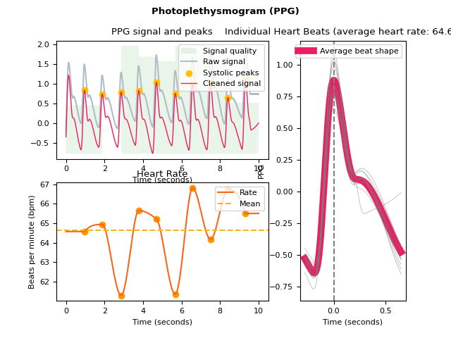
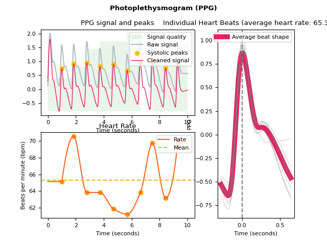
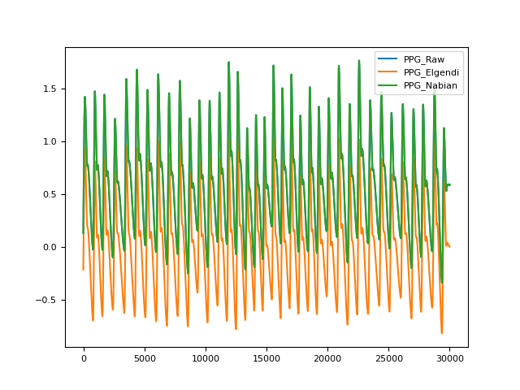

PPG
Contents
PPG#
Main#
ppg_process()#
- ppg_process(ppg_signal, sampling_rate=1000, **kwargs)[source]#
Process a photoplethysmogram (PPG) signal
Convenience function that automatically processes a photoplethysmogram signal.
- Parameters
ppg_signal (Union[list, np.array, pd.Series]) – The raw PPG channel.
sampling_rate (int) – The sampling frequency of
emg_signal()(in Hz, i.e., samples/second).
- Returns
signals (DataFrame) – A DataFrame of same length as
emg_signal()containing the following columns:"PPG_Raw": the raw signal."PPG_Clean": the cleaned signal."PPG_Rate": the heart rate as measured based on PPG peaks."PPG_Peaks": the PPG peaks marked as “1” in a list of zeros.
info (dict) – A dictionary containing the information of peaks and the signals’ sampling rate.
See also
Examples
In [1]: import neurokit2 as nk In [2]: ppg = nk.ppg_simulate(duration=10, sampling_rate=1000, heart_rate=70) In [3]: signals, info = nk.ppg_process(ppg, sampling_rate=1000) In [4]: nk.ppg_plot(signals)
{kind=link}
ppg_analyze()#
- ppg_analyze(data, sampling_rate=1000, method='auto')[source]#
Photoplethysmography (PPG) Analysis.
Performs PPG analysis on either epochs (event-related analysis) or on longer periods of data such as resting-state data.
- Parameters
data (Union[dict, pd.DataFrame]) – A dictionary of epochs, containing one DataFrame per epoch, usually obtained via
epochs_create(), or a DataFrame containing all epochs, usually obtained viaepochs_to_df(). Can also take a DataFrame of processed signals from a longer period of data, typically generated byppg_process()orbio_process(). Can also take a dict containing sets of separate periods of data.sampling_rate (int) – The sampling frequency of the signal (in Hz, i.e., samples/second). Defaults to 1000Hz.
method (str) – Can be one of
"event-related"for event-related analysis on epochs, or"interval-related"for analysis on longer periods of data. Defaults to"auto"where the right method will be chosen based on the mean duration of the data ("event-related"for duration under 10s).
- Returns
DataFrame – A dataframe containing the analyzed PPG features. If event-related analysis is conducted, each epoch is indicated by the
Labelcolumn. Seeppg_eventrelated()andppg_intervalrelated()docstrings for details.
See also
bio_process,ppg_process,epochs_create,ppg_eventrelated,ppg_intervalrelatedExamples
In [1]: import neurokit2 as nk # Example 1: Simulate data for event-related analysis In [2]: ppg = nk.ppg_simulate(duration=20, sampling_rate=1000) # Process data In [3]: ppg_signals, info = nk.ppg_process(ppg, sampling_rate=1000) In [4]: epochs = nk.epochs_create(ppg_signals, events=[5000, 10000, 15000], ...: epochs_start=-0.1, epochs_end=1.9) ...: # Analyze In [5]: analyze_epochs = nk.ppg_analyze(epochs, sampling_rate=1000) In [6]: analyze_epochs Out[6]: Label Event_Onset ... PPG_Rate_Trend_Quadratic PPG_Rate_Trend_R2 1 1 5000 ... -0.109453 0.995233 2 2 10000 ... 0.982980 0.986461 3 3 15000 ... -1.576799 0.800976 [3 rows x 12 columns] # Example 2: Download the resting-state data In [7]: data = nk.data("bio_resting_5min_100hz") # Process the data In [8]: df, info = nk.ppg_process(data["PPG"], sampling_rate=100) # Analyze In [9]: analyze_df = nk.ppg_analyze(df, sampling_rate=100) In [10]: analyze_df Out[10]: PPG_Rate_Mean HRV_MeanNN HRV_SDNN ... HRV_HFD HRV_KFD HRV_LZC 0 86.403761 694.663573 49.385202 ... 1.834631 2.711986 0.852819 [1 rows x 90 columns]
ppg_simulate()#
- ppg_simulate(duration=120, sampling_rate=1000, heart_rate=70, frequency_modulation=0.2, ibi_randomness=0.1, drift=0, motion_amplitude=0.1, powerline_amplitude=0.01, burst_number=0, burst_amplitude=1, random_state=None, show=False)[source]#
Simulate a photoplethysmogram (PPG) signal
Phenomenological approximation of PPG. The PPG wave is described with four landmarks: wave onset, location of the systolic peak, location of the dicrotic notch and location of the diastolic peaks. These landmarks are defined as x and y coordinates (in a time series). These coordinates are then interpolated at the desired sampling rate to obtain the PPG signal.
- Parameters
duration (int) – Desired recording length in seconds. The default is 120.
sampling_rate (int) – The desired sampling rate (in Hz, i.e., samples/second). The default is 1000.
heart_rate (int) – Desired simulated heart rate (in beats per minute). The default is 70. Note that for the ECGSYN method, random fluctuations are to be expected to mimic a real heart rate. These fluctuations can cause some slight discrepancies between the requested heart rate and the empirical heart rate, especially for shorter signals.
frequency_modulation (float) – Float between 0 and 1. Determines how pronounced respiratory sinus arrythmia (RSA) is (0 corresponds to absence of RSA). The default is 0.3.
ibi_randomness (float) – Float between 0 and 1. Determines how much random noise there is in the duration of each PPG wave (0 corresponds to absence of variation). The default is 0.1.
drift (float) – Float between 0 and 1. Determines how pronounced the baseline drift (.05 Hz) is (0 corresponds to absence of baseline drift). The default is 1.
motion_amplitude (float) – Float between 0 and 1. Determines how pronounced the motion artifact (0.5 Hz) is (0 corresponds to absence of motion artifact). The default is 0.1.
powerline_amplitude (float) – Float between 0 and 1. Determines how pronounced the powerline artifact (50 Hz) is (0 corresponds to absence of powerline artifact). Note that powerline_amplitude > 0 is only possible if
sampling_rateis >= 500. The default is 0.1.burst_amplitude (float) – Float between 0 and 1. Determines how pronounced high frequency burst artifacts are (0 corresponds to absence of bursts). The default is 1.
burst_number (int) – Determines how many high frequency burst artifacts occur. The default is 0.
show (bool) – If
True, returns a plot of the landmarks and interpolated PPG. Useful for debugging.random_state (int) – Seed for the random number generator. Keep it fixed for reproducible results.
- Returns
ppg (array) – A vector containing the PPG.
See also
ecg_simulate,rsp_simulate,eda_simulate,emg_simulateExamples
In [1]: import neurokit2 as nk In [2]: ppg = nk.ppg_simulate(duration=40, sampling_rate=500, heart_rate=75, random_state=42)
ppg_plot()#
- ppg_plot(ppg_signals, sampling_rate=None)[source]#
Visualize photoplethysmogram (PPG) data
- Parameters
ppg_signals (DataFrame) – DataFrame obtained from
ppg_process().sampling_rate (int) – The sampling frequency of the PPG (in Hz, i.e., samples/second). Needs to be supplied if the data should be plotted over time in seconds. Otherwise the data is plotted over samples. Defaults to
None.
- Returns
fig – Figure representing a plot of the processed PPG signals.
Examples
In [1]: import neurokit2 as nk # Simulate data In [2]: ppg = nk.ppg_simulate(duration=10, sampling_rate=1000, heart_rate=70) # Process signal In [3]: signals, info = nk.ppg_process(ppg, sampling_rate=1000) # Plot In [4]: nk.ppg_plot(signals)
See also
{kind=link}
Preprocessing#
ppg_clean()#
- ppg_clean(ppg_signal, sampling_rate=1000, heart_rate=None, method='elgendi')[source]#
Clean a photoplethysmogram (PPG) signal
Prepare a raw PPG signal for systolic peak detection.
- Parameters
ppg_signal (Union[list, np.array, pd.Series]) – The raw PPG channel.
heart_rate (Union[int, float]) – The heart rate of the PPG signal. Applicable only if method is
"nabian2018"to check that filter frequency is appropriate.sampling_rate (int) – The sampling frequency of the PPG (in Hz, i.e., samples/second). The default is 1000.
method (str) – The processing pipeline to apply. Can be one of
"elgendi"or"nabian2018". The default is"elgendi".
- Returns
clean (array) – A vector containing the cleaned PPG.
See also
Examples
In [1]: import neurokit2 as nk In [2]: import pandas as pd In [3]: import matplotlib.pyplot as plt # Simulate and clean signal In [4]: ppg = nk.ppg_simulate(heart_rate=75, duration=30) In [5]: ppg_elgendi = nk.ppg_clean(ppg, method='elgendi') In [6]: ppg_nabian = nk.ppg_clean(ppg, method='nabian2018', heart_rate=75) # Plot and compare methods In [7]: signals = pd.DataFrame({'PPG_Raw' : ppg, ...: 'PPG_Elgendi' : ppg_elgendi, ...: 'PPG_Nabian' : ppg_nabian}) ...: In [8]: signals.plot() Out[8]: <AxesSubplot:>
References
Nabian, M., Yin, Y., Wormwood, J., Quigley, K. S., Barrett, L. F., & Ostadabbas, S. (2018). An Open-Source Feature Extraction Tool for the Analysis of Peripheral Physiological Data. IEEE Journal of Translational Engineering in Health and Medicine, 6, 1-11. doi:10.1109/jtehm.2018.2878000
{kind=link}
ppg_findpeaks()#
- ppg_findpeaks(ppg_cleaned, sampling_rate=1000, method='elgendi', show=False)[source]#
Find systolic peaks in a photoplethysmogram (PPG) signal
- Parameters
ppg_cleaned (Union[list, np.array, pd.Series]) – The cleaned PPG channel as returned by
ppg_clean().sampling_rate (int) – The sampling frequency of the PPG (in Hz, i.e., samples/second). The default is 1000.
method (str) – The processing pipeline to apply. Can be one of
"elgendi". The default is"elgendi".show (bool) – If
True, returns a plot of the thresholds used during peak detection. Useful for debugging. The default isFalse.
- Returns
info (dict) – A dictionary containing additional information, in this case the samples at which systolic peaks occur, accessible with the key
"PPG_Peaks".
See also
Examples
In [1]: import neurokit2 as nk In [2]: import matplotlib.pyplot as plt In [3]: ppg = nk.ppg_simulate(heart_rate=75, duration=30) In [4]: ppg_clean = nk.ppg_clean(ppg) In [5]: info = nk.ppg_findpeaks(ppg_clean) In [6]: peaks = info["PPG_Peaks"] In [7]: plt.plot(ppg, label="raw PPG") Out[7]: [<matplotlib.lines.Line2D at 0x7fed23c30640>] In [8]: plt.plot(ppg_clean, label="clean PPG") Out[8]: [<matplotlib.lines.Line2D at 0x7fed272c0580>] In [9]: plt.scatter(peaks, ppg[peaks], c="r", label="systolic peaks") Out[9]: <matplotlib.collections.PathCollection at 0x7fed272c3670> In [10]: plt.legend() Out[10]: <matplotlib.legend.Legend at 0x7fed23be2e90>

References
Elgendi M, Norton I, Brearley M, Abbott D, Schuurmans D (2013) Systolic Peak Detection in Acceleration Photoplethysmograms Measured from Emergency Responders in Tropical Conditions. PLoS ONE 8(10): e76585. doi:10.1371/journal.pone.0076585.